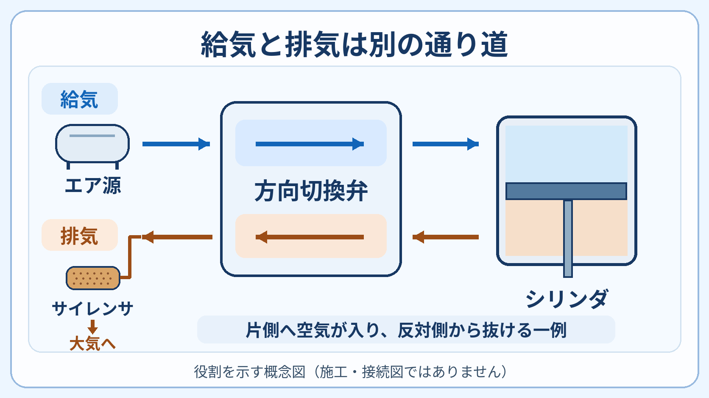
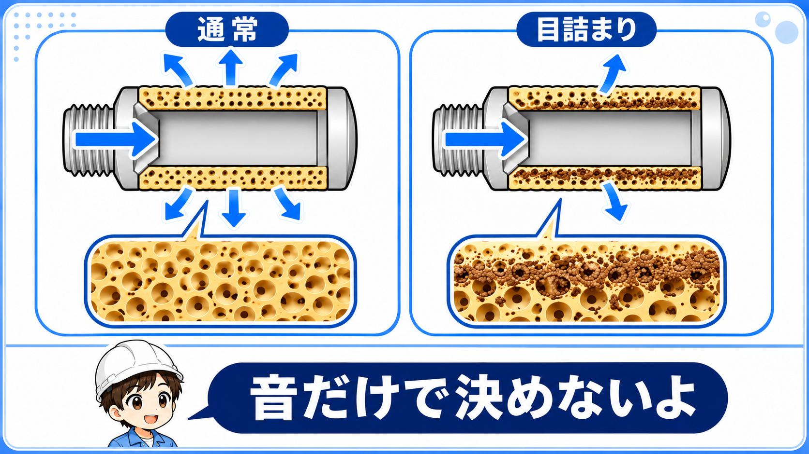

サイレンサは、空気を止めずに排気音を抑える部品
エアシリンダが動くとき、片側に圧縮空気が入り、反対側の空気がエアバルブを通って外に出ます。サイレンサは主にこの排気口に付き、「プシュッ」という排気音を和らげます。焼結体などの多孔質の吸音材を使うタイプでは、空気が細かな通り道を通って外へ抜けます。
サイレンサは供給圧力を調整する部品ではありません。機械の振動音、バルブの切替音、配管の漏れ音も、排気音とは別に考えます。排気音対策と、空気を必要な速さで逃がせることは、どちらも大切です。

先輩静かになったかと、空気が抜けているかは、別々に見るんだよ。

後輩音が小さいだけでは、正常とは言えないんですね。
空気はどこから入り、どこから抜ける？
複動シリンダが動く一方向を例にすると、供給側は「エア源から、方向切換弁を経て、シリンダの片側へ」。排気側は「シリンダの反対側から、方向切換弁を経て、排気口のサイレンサから大気へ」です。ストロークの方向が反対になれば、シリンダの給気側と排気側も入れ替わります。

これは役割を整理するための例です。弁のポート表示・共通排気かどうか・消音器の有無は、実機の回路図と型式別資料で照合します。排気口を塞いだり、サイレンサを外したまま運転したりして確かめません。
選定では「ねじが合うか」と「空気が抜けるか」を分ける
方向切換弁や、一部の真空発生器などの排気側で使います。交換候補を見比べるときは、取付方式・ねじの規格と口径だけでなく、必要な排気流量、使用圧力・温度、機器側が許容する排気側圧力、保守条件を確認します。複数の弁が排気を共有する構成なら、同時に排気するときの条件も機器メーカーと確認します。
例として、SMCの小型樹脂ねじ込み型では、AN15-02とAN20-02はどちらも接続口径1/4ですが、掲載の推奨流量は順に1.0以下と3.0以下 m³/min（ANR）です。同カタログの一次側圧力0.5 MPaの条件で示された値です。他の製品や圧力条件にそのまま使ったり、許容背圧と読み替えたりはできません。
カタログで数字を見るとき
推奨流量・使用圧力・消音効果は別の項目です。消音効果の値は実機の騒音値ではなく、回路や圧力で変わります。設備の動作や安全機能にかかわる変更は、同じねじが付くという理由だけで進めません。
目詰まりすると「出口側」に圧力が残りやすくなる
目詰まりなどで排気が通りにくいと、弁の排気口側の圧力（背圧）が上がり、シリンダの排気側の圧力が下がるまで時間がかかることがあります。押す側と抜く側の圧力差が小さくなり、動きが遅くなる場合があります。症状の出方は回路と負荷次第で、詰まりだけで決まるものではありません。

音が大きくなったら部品の外れ・破損や別の発音源も候補。逆に静かでも、排気が乏しい可能性はあります。どちらも音量だけでは正常・故障の判定はできません。目詰まりで排気ポートを閉塞させない設計・保守が重要です。
動きが遅いときは「供給・切替・排気」を分ける
たとえば「押し出しは以前と同じで、戻りだけ時間がかかる」なら、戻るときにどちらの空気室から、どの経路で空気が抜けるかを回路図で追います。次の表は原因の決めつけではなく、点検記録を整理する手がかりです。
| 見る範囲 | 照合すること |
|---|---|
| 供給 | 同じ供給を使う別の機器にも変化があるか。既存の運転記録で供給圧力や負荷の変化を確認できるか。 |
| 切替 | 指令からバルブの応答までの遅れか、シリンダが動き出してからの遅れか。位置表示などの既存情報で区別できるか。 |
| 排気 | 遅い方向の排気経路にどの弁・速度調整弁・サイレンサがあるか。直近の交換履歴や汚れの記録はあるか。 |
このほか、負荷の変化、シリンダや機械側の引っかかりでも動きは遅くなります。以前の記録と同じ作業条件で違いを見比べ、見つかった事実と原因の推定を分けます。
後輩戻りだけ遅いなら、交換する前に戻りの排気を図面で追います。
先輩そう。指令を出してから動き始めるまでが遅いのかも、分けて記録すると見やすいよ。
取り外し・点検は、残圧と可動部の安全を確保してから
運転中は、設備が定めた安全な位置で既存の表示や記録を確認する範囲にとどめます。機器に触れる点検や取り外しは、設備の手順と型式別取扱説明書に従える担当者が行います。
- 設備を停止してエネルギーを隔離する。 供給空気と関係する電源などを設備手順で遮断し、意図しない再起動と荷の落下・可動部の飛び出しを防ぎます。
- 残圧を排気し、該当部の残圧がないことを確認する。 閉じ込められた空気は供給を止めただけでは残ることがあります。急に部品を緩めて排気させません。
- 型式を照合して、指定の点検・交換方法を選ぶ。 外れ、割れ、付着物、交換時期を見ます。再使用・洗浄・エレメント交換の可否は製品ごとに異なり、穴あけや分解で流れを戻そうとしません。
残圧や落下防止の確認ができない場合は手を付けず、設備管理者に引き継ぎます。取り外した状態での試運転や、排気口を塞いでの比較は、このページでは勧めません。
参考にしたメーカー資料
- SMC「サイレンサ ANシリーズ」：p.818の仕様・性能と注記、p.826の製品個別注意事項。
- CKD「サイレンサ SLW-H」取扱説明書：目詰まりによる排気ポート閉塞、回路・圧力で変わる消音効果。
- SMC「ハンドバルブ VHシリーズ」取扱説明書：保守点検時の供給遮断・残圧・可動部に関する注意。
- SMC「5ポート電磁弁 SY3000/5000/7000」取扱説明書：共通注意事項のマニホールド背圧。
まとめ：音と動きは別々に見て、排気経路を追う
サイレンサは排気音を和らげます。シリンダの動きが遅いときは、給気と弁の切替に加えて、排気の通り道も確認対象にします。音の大小だけで詰まりを判断せず、実機の図面・型式・記録を照合しましょう。